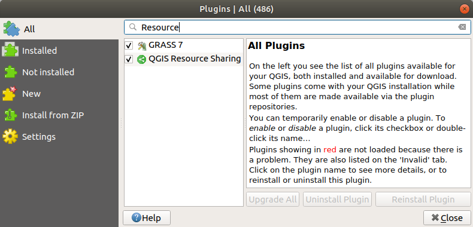

Installing the plugin¶
From the QGIS Plugin Manager¶
To install the plugin, you use QGIS Plugin Manager.
Go to the
Pluginmenu and chooseManage and Install Plugins...Search for
QGIS Resource Sharingin the search box of the dialog in theAlltabSelect the
QGIS Resource Sharingplugin and clickInstall

From the repository¶
If you are adventurous and would like to get the latest code of the plugin, you can install it directly from the repository. The repository is on Github - here. There are 2 ways to get the plugin:
Download the zip from github: ZIP Master,
extract the zip, and copy the extracted root directory into your local QGIS plugin directory:
on Linux:
~/.local/share/QGIS/QGIS3/profiles/default/python/plugins,on Windows:
C:\Users\{username}\AppData\Roaming\QGIS\QGIS3\profiles\default\\python\plugins
Use git to clone the repository in your plugin directory, or clone it somewhere else and add a symbolic link to it in your plugin directory.
Locating and starting the plugin in the QGIS GUI¶
The plugin has its own toolbar (Resource Sharing, with only one action).
You can enable / disable the toolbar in View-> Toolbars, and move it (drag and drop) to a convenient location in the GUI. The plugin can also be started from the Web menu (Web-> Resource Sharing) and a submenu of the Plugins menu (Plugins-> Resource Sharing -> Resource Sharing).